Kanada Zaman Çizelgesi
Yerli medeniyetten avrupalı temaslara ve ardından modern bir dünya devletine doğru.
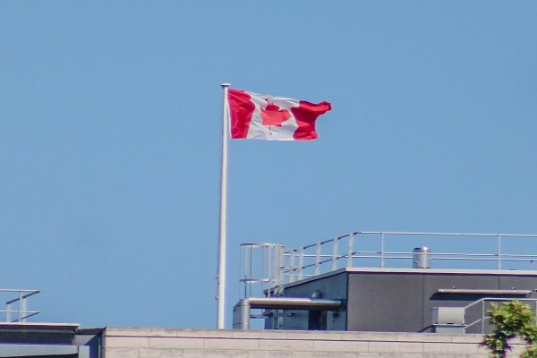
Fotoğraf Boaventuravinicius, CC BY 4.0, via Wikimedia Commons
↕
Daha fazlasını görmek için yukarı veya aşağı kaydırın
Milattan Önce 30000 – 15000 Bering Boğazı Üzerinden İlk Göç
zengin ve çeşitli Yerli toplumları oluşturmak için, Asya kitasindan İlk insanlar Kuzey Amerika'ya göç ettiler.
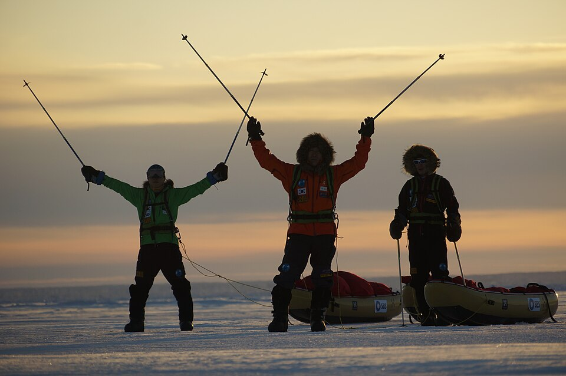
Fotoğraf Suevic, CC BY-SA 4.0, via Wikimedia Commons
Milattan Önce 5000 - 4000 Paleo-Inuit
Daha sonraki bir göç, Paleo-İnuitlerin
talarını Sibirya'dan getirerek Kanada ve Greenland'ın kuzey kıyılarına yerleşmelerini sağladı.
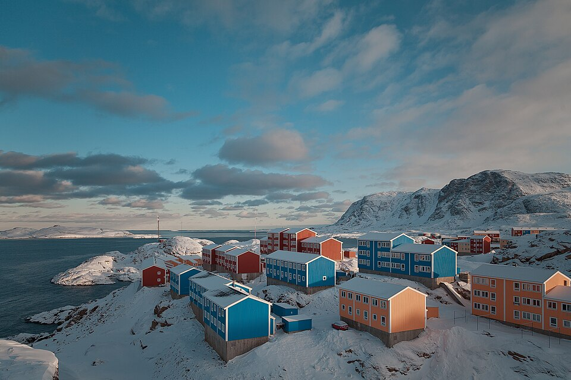
Fotoğraf Evgenii Salganik, CC BY 4.0, via Wikimedia Commons
Milattan Sonra 1000 Avrupa'dan İlk Göç
İskandinav kâşifler Kanada'ya ulaştı ve Newfoundland'in bölgelerine yerleşerek bilinenilk Avrupa temasını gerçekleştirdi.
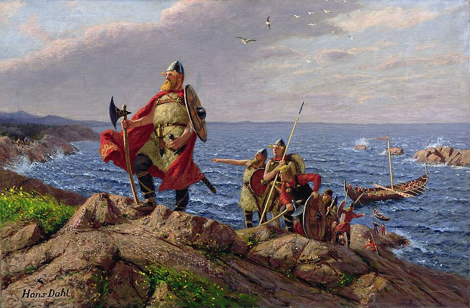
Fotoğraf Hans Dahl, Public domain, via Wikimedia Commons
Milattan Sonra 1497 John Cabot
İtalyan kâşifti, İngiltere Kralı VII Henry'nin
görevlendirmesiyle denize açılmış ve Newfoundland'de karaya çıkmıştı.
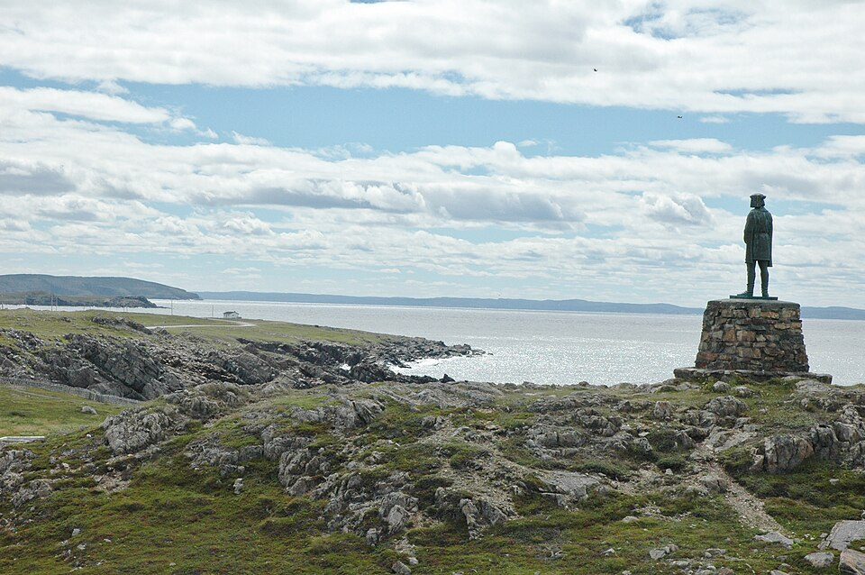
Fotoğraf Evan T Jones, CC BY-SA 4.0, via Wikimedia Commons
Milattan Sonra 1534 Jacques Cartier
St. Lawrence Körfezi'ni keşfeder
ve yerel "kanata" sözcüğünü kullanarak toprakları Fransa adına sahiplenir.
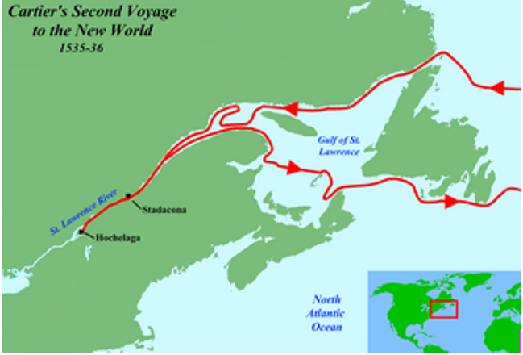
Fotoğraf Jon Platek, CC BY-SA 3.0, via Wikimedia Commons
Milattan Sonra 1608 Samuel de Champlain
Québec Şehri'ni kalıcı bir Fransız yerleşimi ve Yeni
Fransa'nın başkenti olarak kurar.
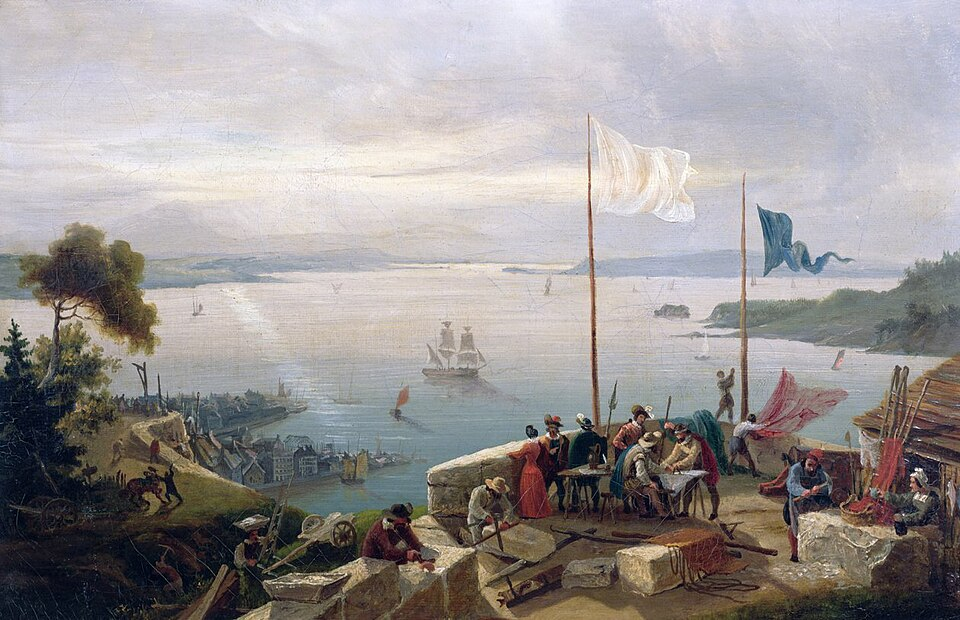
Fotoğraf Ambroise Louis Garneray, Public domain, via Wikimedia Commons
Milattan Sonra 1670 Hudsons Bay Şirketi
İngiliz Kraliyeti, kürk ticaretini genişleterek Hudson's Bay Company'ye bir imtiyaz belgesi verir.
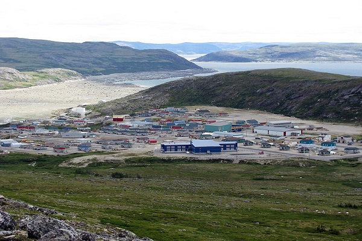
Fotoğraf Lkovac, CC BY-SA 3.0, via Wikimedia Commons
Milattan Sonra 1759 Abraham Ovaları
İngiliz kuvvetleri, Quebec'teki
Abraham Ovaları muharebesi'nde Fransızları mağlup etti.
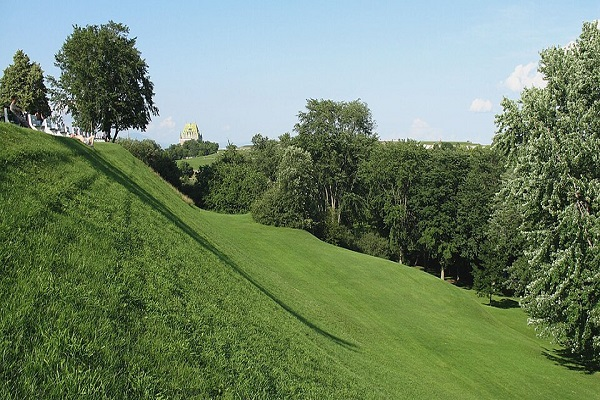
Fotoğraf Gilbert Bochenek, CC BY 3.0, via Wikimedia Commons
Milattan Sonra 1763 Paris Antlaşması
Yeni Fransa'yı resmen İngiliz kontrolüne
devrederek bir İngiliz kolonisi haline getiriyor ve Quebec üzerindeki Fransız otoritesine son veriyor.
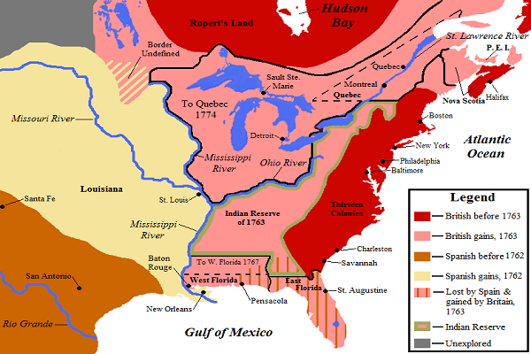
Fotoğraf Jon Platek, CC BY-SA 3.0, via Wikimedia Commons
Milattan Sonra 1791 Anayasa Yasası
Quebec'i iki bölüme ayırır
İngilizce konuşulan Yukarı Kanada, Fransızca konuşulan Aşağı Kanada.
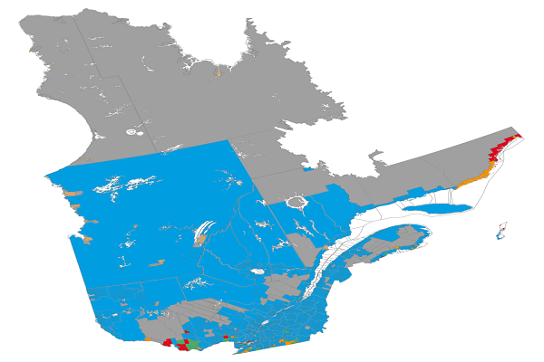
Fotoğraf Piotron, CC BY 3.0, via Wikimedia Commons
Milattan Sonra 1812-1814 U.S İşgalleri
Kanada ve İngiliz kuvvetleri
U.S işgalini başarıyla püskürtüyor.
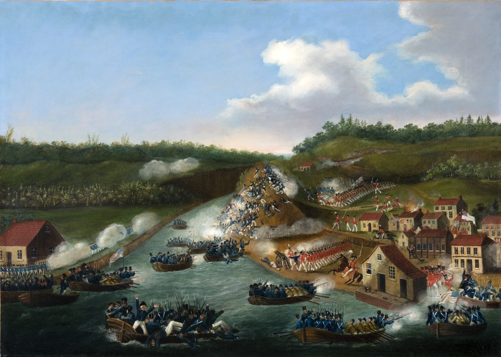
Fotoğraf RiverBrink Art Museum, Public domain, via Wikimedia Commons
Milattan Sonra 1867 Kanada Kuruldu
Ontario, Quebec, Nova Scotia ve
New Brunswicki, federal Kanada Dominyonu çatısı altında birleştirir.

Fotoğraf Gilbert Bochenek, CC BY 3.0, via Wikimedia Commons
Milattan Sonra 1870-1873 Eyaletler federasyona katılıyor
Manitoba, British Columbia
ve Prince Edward Adası yeni konfederasyona katılıyor.
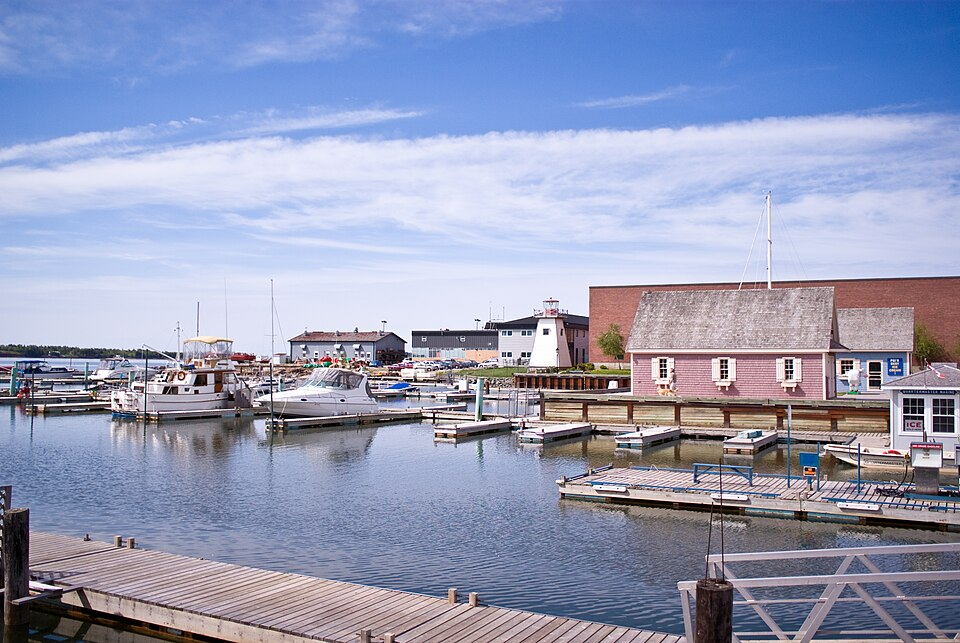
Fotoğraf Charles Hoffman, CC BY-SA 2.0, via Wikimedia Commons
Milattan Sonra 1885 Pasifik Demiryolu
Ülkeyi kıyıdan kıyıya
birbirine bağlayan kıtalararası demiryolu tamamlandı.
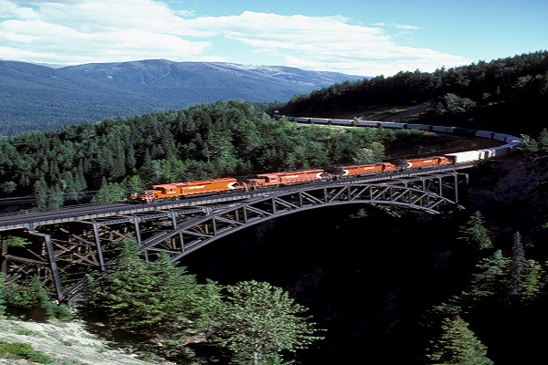
Fotoğraf Fotoğraf David R. Spencer., CC BY-SA 3.0, via Wikimedia Commons
Milattan Sonra 1905 Daha fazlası federasyona katılıyor
Alberta ve Saskatchewan
Kanada Federal Dominyonu'na eyalet olarak katılıyor.
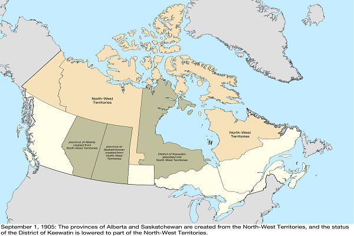
Fotoğraf Golbez, CC BY-SA 4.0, via Wikimedia Commons
Milattan Sonra 1914-1918 Birinci Dünya Savaşı
Kanada, Müttefiklerin yanında
savaşarak güçlü bir uluslararası kimlik oluşturmaktadır.
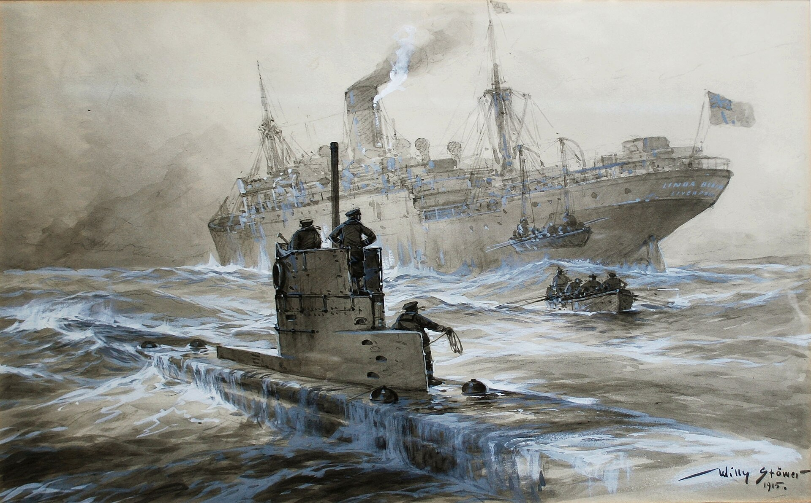
Fotoğraf RiverBrink Art Museum, Public domain, via Wikimedia Commons
Milattan Sonra 1931 Yasama bağımsızlığı
Westminster Yasası,
Kanada'ya İngiliz Parlamentosu'ndan yasama bağımsızlığı tanır.
.jpg)
Fotoğraf Benson Kua, CC BY-SA 2.0, via Wikimedia Commons
Milattan Sonra 1939-1945 İkinci Dünya Savaşı
Kanada, İkinci Dünya Savaşı'nda
önemli bir rol oynar ve savaş sonrasında büyük bir ekonomik canlanma yaşar.
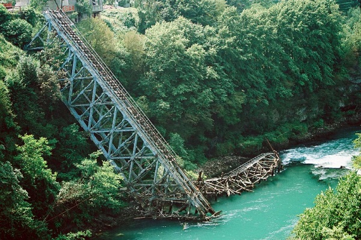
Fotoğraf Nenad Martinovič, CC BY-SA 3.0, via Wikimedia Commons
Milattan Sonra 1982 Anayasa Yasası
Kraliçe II. Elizabeth, Kanada
Anayasası'nı ülkeye devreden ve Özgürlükler Şartı'nı tesis eden yasayı imzalıyor.
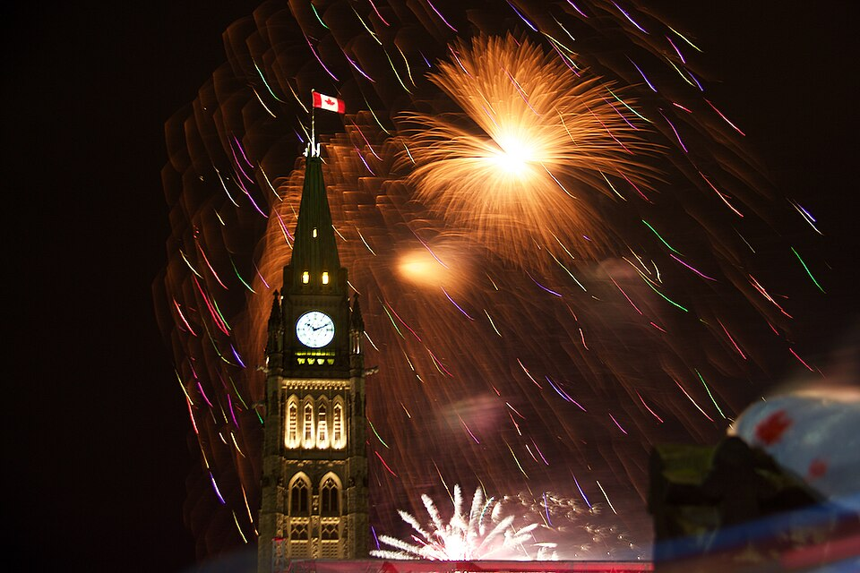
Fotoğraf Harvey K from Toronto, Canada, CC BY 2.0, via Wikimedia Commons
Milattan Sonra 1999 Üçüncü bölge
Nunavut, Kuzeybatı
Toprakları'ndan ayrılarak üçüncü bir bölge olarak kuruldu.
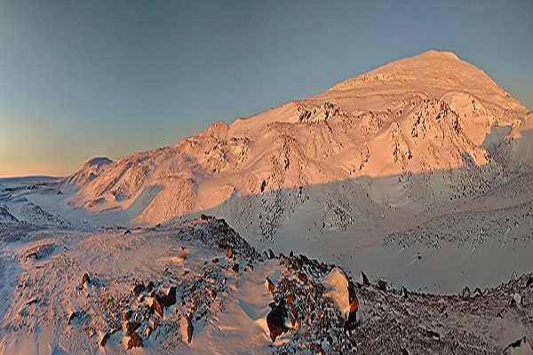
Fotoğraf The Cosmonaut, CC BY-SA 2.5 CA, via Wikimedia Commons
.jpg){kind=link}


.jpg){kind=link}

.jpg){kind=link}